TAP TO HIDE SIDEBAR
Automator: Calendar Alarms
By default, Automator includes a template for workflows that can be assigned as an alarm to Calendar events. For example, an Automator Calendar Alarm workflow could send reminder notices to attendees, gather materials and applications in preparation, create a new Notes document for entering the meeting notes, or all of these — it’s up to you.
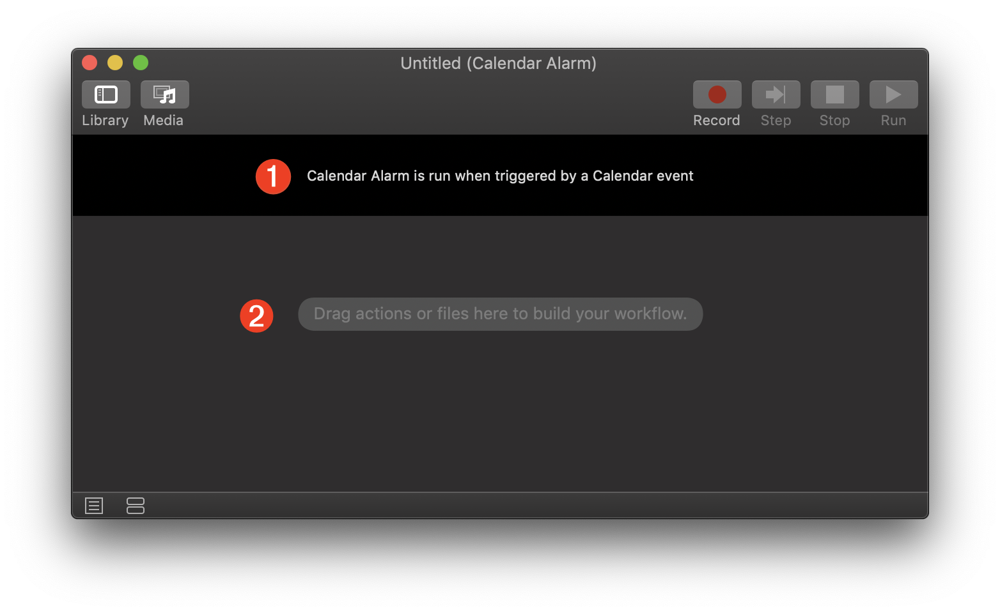
1 The input banner for a Calendar Alarm workflow indicates that it is triggered by a calendar alarm. When saved, the workflow is installed as an applet in the Home > Library > Workflows > Applications > Calendar folder and receives no input upon launch.
2 The workflow assembly area where actions are added in the order in which they will be executed.
Example: Auto-Generate Notes for Meeting
Use the Automator Calendar Alarm template in macOS to create a calendar alarm applet that automatically generates a new meeting outline note in the Notes app prior to the specified event.
The workflow contains a single Automator action that runs an AppleScript script to open the Notes application and create a new note containing a meeting outline.
DOWNLOAD the completed applet.
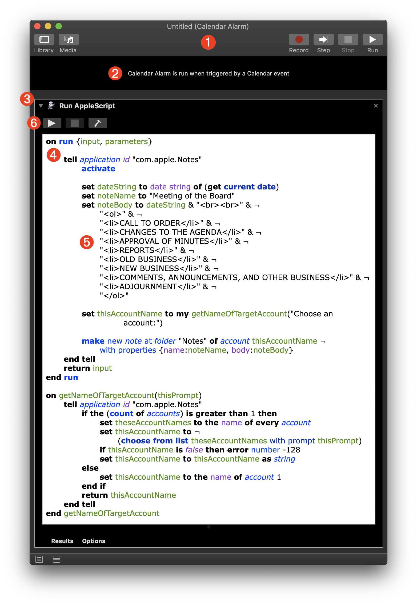
1 The Automator Calendar Alarm workflow document.
2 The workflow input banner indicates the saved applet is triggered by a Calendar event alarm action, specifically the “Open File…” event alarm action.
3 A Run AppleScript action contains the AppleScript script for performing the task.
4 The AppleScript script is composed of two elements: a run handler that is passed whatever input the action receives, and a support handler for returning an object reference to the Notes account in which to add a new note. If there is more than one account, the user is prompted to choose to one to target.
5 Interestingly, the Notes application supports the use of HTML in its content and automatically interprets the HTML tags inserted into the note body generated by the script. In this example, an ordered list (<ol>…</ol>) is created.
6 The Run Script button allows you to test the script without running the whole workflow. Any script results can be viewed in the results pane revealed by clicking the Results button at the bottom of the action view.
AppleScript Script for Creating Meeting Notes
The AppleScript script is composed of two elements: a run handler (lines 01-28) that is passed whatever input the action receives, and a support handler (lines 30-43) for returning an object reference to the Notes account in which to add a new note. If there is more than one account, the user is prompted to choose to one to target.
Interestingly, the Notes application supports the use of HTML in its content and automatically interprets the HTML tags inserted into the note body generated by the script. In this example, an ordered list (<ol>…</ol>) is created (lines 09-19).
| Create Note for Meeting | ||
| 01 | on run {input, parameters} | |
| 02 | ||
| 03 | tell application id "com.apple.Notes" | |
| 04 | activate | |
| 05 | ||
| 06 | set dateString to date string of (get current date) | |
| 07 | ||
| 08 | set noteName to "Meeting of the Board" | |
| 09 | set noteBody to dateString & "<br><br>" & ¬ | |
| 10 | "<ol>" & ¬ | |
| 11 | "<li>CALL TO ORDER</li>" & ¬ | |
| 12 | "<li>CHANGES TO THE AGENDA</li>" & ¬ | |
| 13 | "<li>APPROVAL OF MINUTES</li>" & ¬ | |
| 14 | "<li>REPORTS</li>" & ¬ | |
| 15 | "<li>OLD BUSINESS</li>" & ¬ | |
| 16 | "<li>NEW BUSINESS</li>" & ¬ | |
| 17 | "<li>COMMENTS, ANNOUNCEMENTS, AND OTHER BUSINESS</li>" & ¬ | |
| 18 | "<li>ADJOURNMENT</li>" & ¬ | |
| 19 | "</ol>" | |
| 20 | ||
| 21 | set thisAccountName to my getNameOfTargetAccount("Choose an account:") | |
| 22 | ||
| 23 | make new note at folder "Notes" of account thisAccountName ¬ | |
| 24 | with properties {name:noteName, body:noteBody} | |
| 25 | end tell | |
| 26 | ||
| 27 | return input | |
| 28 | end run | |
| 29 | ||
| 30 | on getNameOfTargetAccount(thisPrompt) | |
| 31 | tell application id "com.apple.Notes" | |
| 32 | if the (count of accounts) is greater than 1 then | |
| 33 | set theseAccountNames to the name of every account | |
| 34 | set thisAccountName to ¬ | |
| 35 | (choose from list theseAccountNames with prompt thisPrompt) | |
| 36 | if thisAccountName is false then error number -128 | |
| 37 | set thisAccountName to thisAccountName as string | |
| 38 | else | |
| 39 | set thisAccountName to the name of account 1 | |
| 40 | end if | |
| 41 | return thisAccountName | |
| 42 | end tell | |
| 43 | end getNameOfTargetAccount | |
Save & Install
To save and install the Calendar Alarm workflow, type Command-S (⌘S) or choose “Save…” from the File menu in Automator. The naming sheet will be displayed in which you enter the name for the saved Automator applet file. Note that by default, this name is used as the created event name, which you can edit.
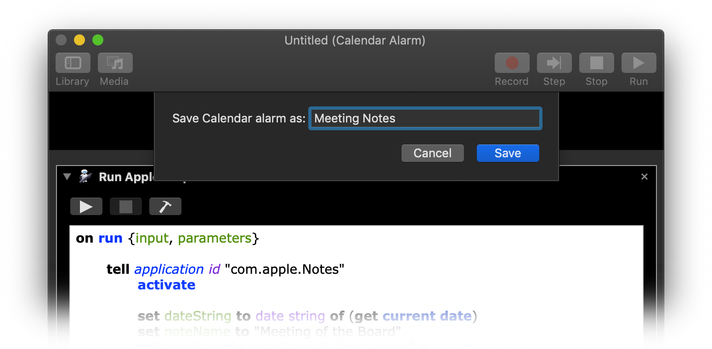
Security Validation
When you save the Calendar Alarm applet, it is run once automatically in order to gain approval from the macOS security architecture.
In macOS, applets and applications running for the first time require user approval to do so. This approval is only required once, prior to the initial execution of the applet or application.
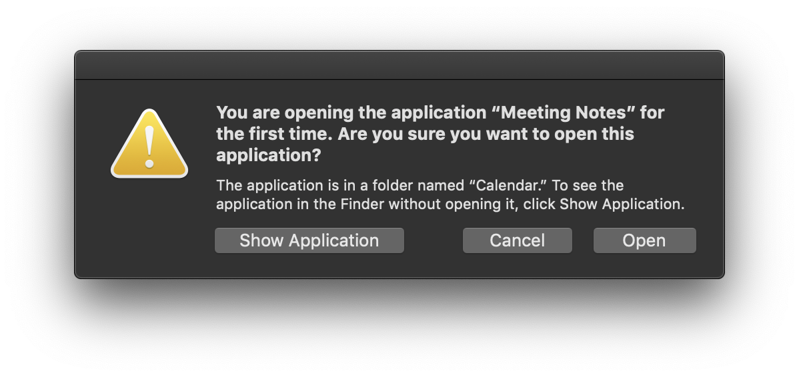
Beginning with macOS Mojave (v10.14) applets and applications that uses Apple Events to control other applications must receive user approval to do so. This approval is only required once, prior to the initial execution of the applet or application.
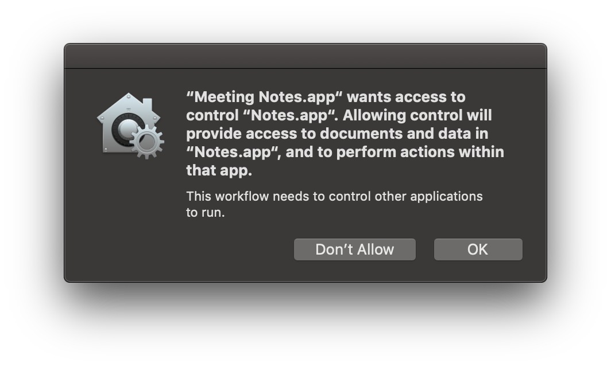
Once an applet or application is approved for executing Apple Events, it is added to the access list in the Security & Privacy system preference pane.
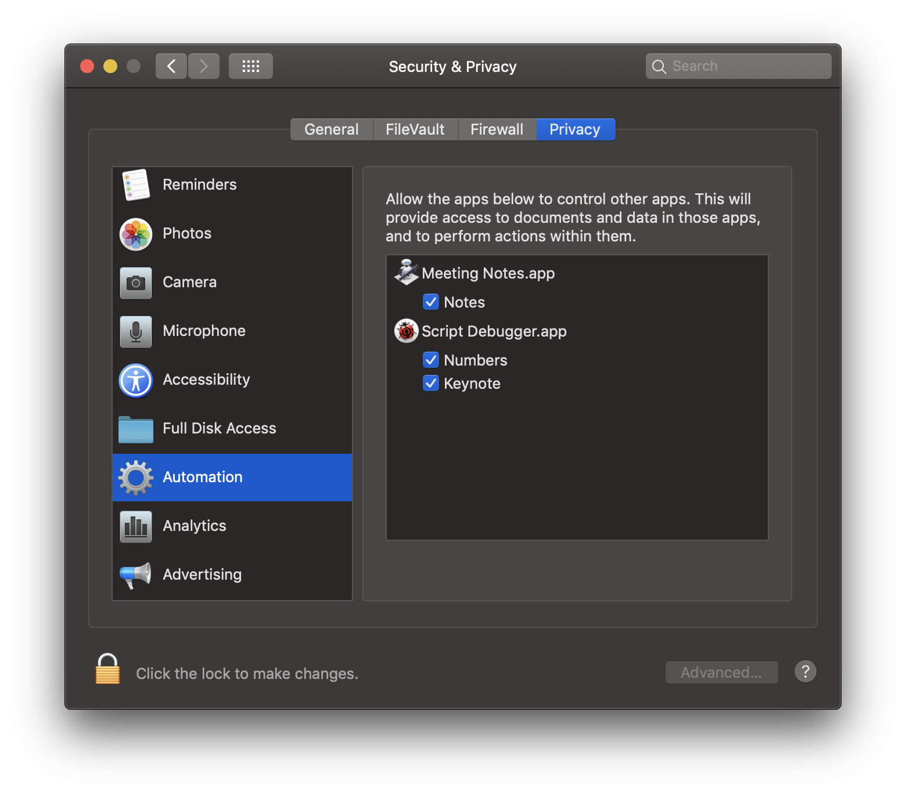
IMPORTANT: Once the Automator Calendar Alarm applet has been approved and added to the Automation Access List, it can be used as alarms for other Calendar events without requiring additional approval.
Edit the Event
By default, when the workflow is saved for he first time a new Calendar event is created for the current date and time. The event is titled using the file name you provided is the naming sheet.
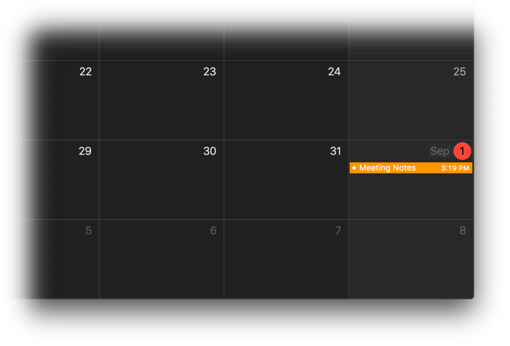
In the Calendar application, double-click the event to summon its edit window and change the event parameters to match the date, time, name, etc. that you want.
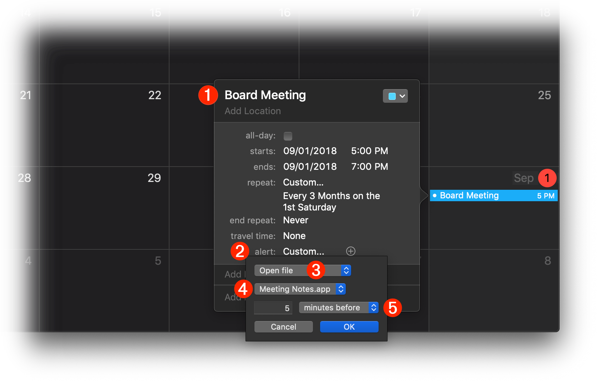
1 The event edit window. Change the event title, date, time, and other parameters to their desired value.
2 To change the parameters for the alarm, select “Custom…” from the Alarm popup menu.
3 The default action that launches the applet is “Open file”
4 The saved Calendar Alarm workflow applet title.
5 Set the time value for when you wish the alarm to execute. In this example, the applet will be launched 5 minutes before the event.
Alarm Result
When the saved Automator Calendar Alarm applet is triggered by the event it will run the AppleScript script in the Run AppleScript action, which will create a new stylized note in the Notes application. This note contains a meeting outline for the event.
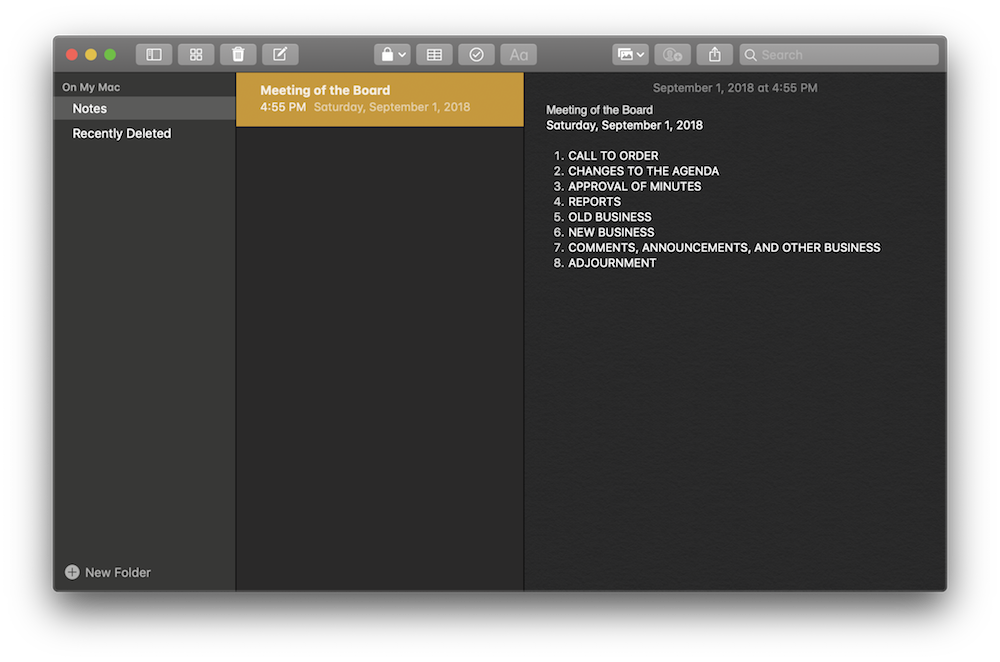
Editing the Alarm Applet
Should you later wish to edit the saved applet, you can open it for editing in Automator by choosing “Open…” from the File menu, and then selecting “Calendar Alarm” from the Type popup menu displayed by clicking the Options button in the forthcoming dialog. The contents of the Home > Library > Workflows > Applications > Calendar folder.
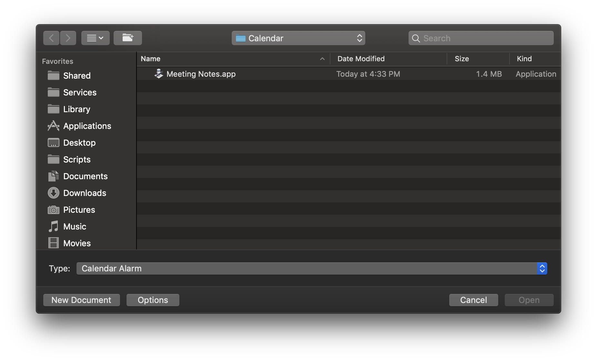
Select the applet to edit, and click the Open button in the dialog.
PRO TIP: to view an applet in the Finder, select it in the dialog list and type Command-R (⌘R) and the Finder will become the frontmost application with the containing folder displayed with the applet selected:
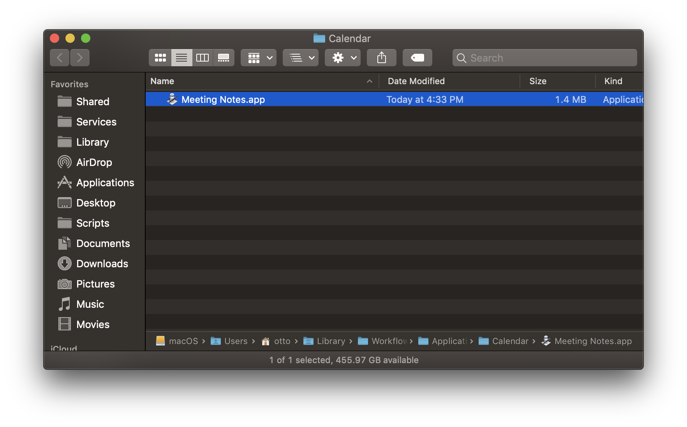
Home > Library > Workflows > Applications > Calendar
This webpage is in the process of being developed. Any content may change and may not be accurate or complete at this time.